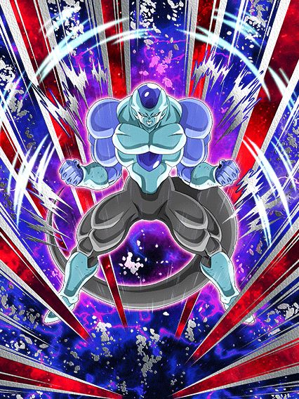
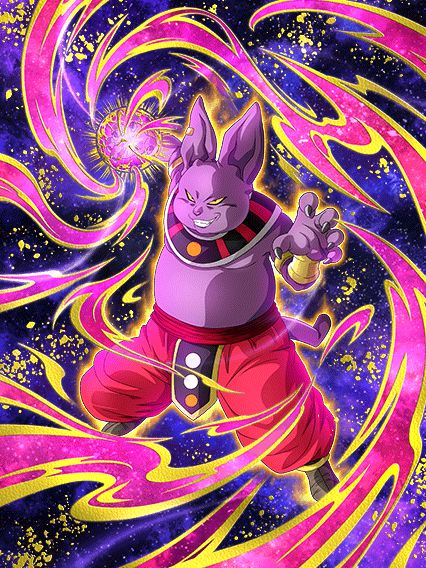

Continuo sentindo todo o hype de 2024, está insano 🔥
Pelo menos, está tudo bem, pq a junção do global e jp foi confirmada pra perto da celebração de downloads, então a gente só tem que enfrentar mais 4 meses de coisas inúteis!!! Wow!!!!1!1!1!11!1

G O K U B A S E .
Esse card é bizarro, ele tem de tudo pra ser bom mas ao mesmo tempo é todo ferrado
Pra começar, eles obrigatoriamente precisam de um goku no turno pra terem os buffs mais importantes, só que eles são androids né, eles vão ter links de androids, o goku NÃO pô
E infelizmente pra eles, eles ganham muito mais DEF e 35% de redução de dano só depois de darem super, e lembrando que esse card saiu logo depois da celebração de download no jp, então eles já tavam ligados no quão tóxicos são AOEs no começo da partida e deixaram esse card assim mesmo, muito frágil
O real grande diferencial é esse card ser lider e suporte pra nova categoria "Tournament Participants", que é não ironicamente muito forte com cards muito bons
E o suporte deles é muito bom sim, eles dão 35% de ATK e DEF pra categoria no turno, esses 35% ainda aumentam pra 52% de ATK e 53% de DEF se eles pegarem 7 orbs oq eu achei meio difícil as vezes mas ok né
E eles tem um efeito de super attack muito forte, onde cada super attack deles aumenta 35% de ATK e DEF de todo mundo por 2 turnos, então sim, eles tem o incrível suporte de múltiplos turnos, muito bom isso, e slk, com 2 supers eles dão 70% de suporte, isso é muito forte
Uma pena que esse super attack tão forte só pode ser usado SE TIVER UM GOKU BASE NO TURNO (Omatsu por favor pare de colocar o goku em todos os cards, não precisava disso)
E pra finalizar esse card confuso, eles tem a active skill mais ridícula em anos

Se liga nessa condição: "Pode ser ativada após o turno 5 caso esteja com menos de 78% de HP"
Você olha isso e pensa "slk complicado ein, deve ser um ataque forte"
Eles mudam orbs TEQ pra INT.
É só isso, eles só mudam orbs e acabou, não tem buffs a mais, crítico, adicional, sei lá
Nada.
Tirando a ost muito boa, essa é certamente uma das active skills que foi feita em 2023/2024.

Eu não sei se agradeço por não ter uma categoria universo 3 no jogo ou se questiono pq esses caras são líder pra power of wishes.
Enfim, eles precisam ou de um time power of wishes ou tournament participants pra terem uma passiva, já começa por aí né 🔥
Ai pra se contradizer eles só ganham 100% de ATK e DEF se tiver um aliado power of wishes, então é, você parece ter liberdade mas não tem não xd
Tipo sim, eles quebram 1 ataque do inimigo e são efetivos contra tudo se tiver um aliado tournament participants, mas vc realmente tem como comparar isso com um pedaço de passiva?
Em resumo, mais um card secundário horrível e inútil, obrigado dokkan
Sério, se o objetivo é encher o jogador de goku base, não é mais fácil fazer o card secundário desse banner um goku base?
")
Pq específicamente o super dessa 18 é tão bem feito?
Bom, essa 18 quer muito ficar no slot 1, já que a passiva inteira dela pede isso
No slot 1 ela tem 200% de DEF a mais e 36% de redução de dano, além de dar 30% de DEF pra todo mundo no turno, não ironicamente isso é decente
Esses buffs são cortados no meio depois do turno 5 mas olha, considerando o tamanho de eventos difíceis recentemente..
Pra completar ela ganha 150% de ATK e 30% de chance de critar se ela levar um golpe antes de atacar, então é, slot 1.
Bom, é, ela é um card F2P slot 1, oq poderia dar errado?
Mas não diria que ela é inútil não, principalmente por ela ser uma rara 18 que não precisa de um 17 pra ter 90% da passiva, dá pra levar ela em algum evento sim

Ele certamente é metade de alguém que não poderia ser derrotado se ele fosse o super 17...
Esse cara é decente por 3 turnos e depois ele é um card, já que nesses 3 turnos ele tem 67% de chance de desvio (só arredonda pra 70% pô)
Depois dos 3 turnos a chance cai pra 50% oq não é exatamente horrível mas olha só, se 70% já é perigoso hoje em dia, imagine menos.. pelo menos ele tem 100% de DEF a mais se estiver no slot 2 ou 3 então é.. bem recomendado
Bom ele builda um pouco de ATK e DEF desviando e no turno 4 adiante ele tem mais 100% de ATK e um incrível adicional de 30% de chance de ser super, caraca, que personagem fantástico
Como eu disse, 3 turnos e depois inútil
Eu ainda tô achando hilário que o awaken e eza desse cara e da 18 vieram na mesma celebração e de algum jeito ela ganhou uma animação linda no super e esse cara tem uma animação de 2016 💀
Dokkan criou um vício em fazer o Kuririn do clássico muito forte.
Os buffs pra DB Saga não param, e eu simplesmente amo o fato do time ser muito F2P, coisa boa
Esse cara não tem nem EZA ainda mas ele é absurdo de forte, o cara tem muito ATK e DEF, debuffa o inimigo, é suporte de 30% de ATK e DEF pra DB Saga, tem uma chance infelizmente baixa de lançar um super adicional mas tá ali né
E acho q o mais doido é q ele ganha um scouter e 30% de chance de desviar por 3 turnos se seu HP cair abaixo de 86%, isso é muito forte considerando q DB saga tem deuses tipo a Bulma ou o Hacchan, esse cara é mais um personagem decente pra levar em eventos e ele consegue se segurar sozinho sim.
")
Esse cara vai eventualmente ser um LR, mas como o awaken dele pra LR pode acontecer aleatoriamente no mês que vem ou em 2036, é legal falar dele agora.
Ele tem uma base muito boa pra um LR, já que ele é restrito a DB Saga e Earth-Bred Fighters, q advinha só, é o time dele 🤯
Tem crítico, super adicional, todos com chances baixas mas q vão aumentar quando ele ganhar awaken
Ele tmb tem um pouquinho de suporte, então é, com a base ele tem, que ele seja incrível.


18 defensiva e 17 ofensivo, caramba, nunca vi isso antes ein dokkan.
Bom, os dois tem kits parecidos pq eles são irmãos né, uau
O 17 é um nuker ofensivo, ganhando 40% de ATK por orb e 30% de DEF e dá um adicional de 70% de ser super se o inimigo estiver stunado
Se tiver uma 18 na rotação ele dá suporte de 30% de ATK pra Sibling Bond e fica efetivo contra tudo, ou seja, pq vc não usaria eles juntos né
Enquanto isso a 18 é nuker tmb mas ganha mais DEF q ATK por orb, dá o mesmo suporte de 30% mas pra DEF, e diferente do 17 ela tem defesa ativa, q é bem mais valioso, aí ela já é usável com uma buildzinha de desvio
Ela fica efetiva contra tudo se o inimigo estiver selado mas isso realmente não interessa
O maior problema desses 2 é q eles não tem nenhum buff de começo de turno, é só oq eles pegarem de orb e acabou, isso é perigoso demais pra levar eles em eventos já q nenhum é orb changer, mas no geral, se eles ganharem um eza, podem ficar muito bons sim
E a arte deles é muito linda, slk, precisam de um sticker logo
Certamente o inimigo que o irmão do raditz e o rival do irmão do raditz tiveram que enfrentar.
Ah não sei pq tanto reclamam desse card, ele é tão bom, chance de stunar todo mundo no começo do turno, efetivo contra 1 inimigo, redução de dano se estiver enfrentando 2 ou mais inimigos..
Tipo, ele até ganha bastante buffs e dá crítico garantido se estiver contra um inimigo Universe Survival Saga ou Tournament Participants, pra mim isso é muito bom! Eu realmente gosto desse card F2P!
Ah é, ele não é um F2P..
Esse é sem dúvidas o pior eza de 2023/2024, tipo, até o goku black int tem uso se o evento for longo o bastante pra ele stackar, esse cara é tão horrível q ele garantido vai fazer as partidas acabarem bem rápido, já q ele vai morrer pra você
Acho q a gente deu sorte q ele não é extreme ein, se não seria pior

MEU DEUS.
PERA AI PERA AI.. CALMA..
SÃO BUFFS... PRA KALE??????????
OOOOOOOOMAGAAAAAWWWD
Esse frost é super simples de passiva e não tem nada de super útil, mas os stats dele são bem altos então ele acaba dando muito dano de uma vez, é meio engraçado
Não, ele não revive o time Universe 6 mas hey é um começo de algo

Um tank genuinamente bom.
É isso, eles são um tank pra Universe 6, eles realmente ajudam a Kale de forma honesta (perdão, é realmente surpreendente tá?)
Eles tem defesa ativa, buildam defesa, ganham um buffzinho tomando golpes, eles realmente são um tank
Lógico q eles só fazem isso mesmo, mas isso q eles fazem já é o bastante, obrigado omatsu.

Isso aqui é uma aberração.
Esse cara tem uma defesa ok, suportezinho legal pra Universe 6, aí do nada..
50% de chance de 400% de ATK
????????
O cara tem uma chance de ativar um pedaço da passiva??
Mas quem disse que para por aí? Depois eles ainda metem um 30% DE CHANCE DE 600% DE ATK RAAAAAAAAHHHHHH QUE PASSIVA É ESSA
Por sinal, o linkset desse personagem é abismal de HORRÍVEL, O CARA TEM OVER 9000 QM RAIOS TEM ESSE LINK-
Sem comentários.

Kkkkkkk hey guys se lembram quando o 17 e a 18 enfrentaram a R- a pera, UM LR DE PARTE 2 Q FAZ SENTIDO???
Parabéns a akatsuki e todos envolvidos, temos um LR da Ribrianne mas não do Kid Buu, obrigado 🔥🔥
Bom, ribrianne, muito hype realmente para o global
Pra começar elas tem muitas chances diferentes de mudar orbs oq é bem bizarro e eu garanto q deve ter um sortudo q viu todas as chances não ativarem xd
Elas tem 2 adicionais que podem ser supers, e ainda ganham bastante buffs com pelo menos 2 orbs pegos oq é muito bom, é coisa fácil né
Elas tmb ganham 22% de chance de crítico a cada 2 orbs pegos, oq é bem forte já q elas tem adicionais, redução de dano, crítico e orb change
Oq nos leva a situação óbvia delas: sem time
Independente doq vc pense, a categoria Universe Survival saga tem 2 times, Universe 7 e Universe 6 entre muitas aspas, qualquer outro é correr risco de vida
Tournament Participants? Vc tem o goku descalço, majunior e etc, pq vc usaria a Ribrianne? Não tem pq
Lógico, a Ribrianne não é uma top tier secreta que não tem time, ela é um LR muito decente mas que é facilmente substituível por algo melhor, e é isso
Por sinal, ela tem uma forma gigante com uma condição de power of wishes, outra categoria q vc jamais levaria a Ribrianne já q se os links dela com outros personagens do torneio do poder são ruins, imagina com cards tipo os GT Boys..
")
Isso aqui é a prova de que teria um goku black LR na celebração de downloads e tiraram ele de última hora.
Ela em si é uma boa giant form, 50% de chance de critar, dano legal, orb changer, fácil de pegar ki, bem tranquila
Mas a OST sinistra desse card é bizarra pq combina perfeitamente com a Ribrianne e ao mesmo tempo não, juro que seria perfeita num goku black rosé carnival com um domínio.. que bom que esse card totalmente existe e jamais foi ignorado pra colocarem o gohan do futuro ou algo assim..

Mais world tournament? Wooowww que divertido (não aguento mais isso não, socorro)
Tá.. vamo lá, o bardock é bem decente contra um inimigo Wicked Bloodline, tem 50% de chance de desvio, 2 adicionais e no geral buffs bem decentes, ele é usável no mínimo
O turles é um card de super battle road, e é isso, não consigo ver ele sendo usado pra qualquer outra coisa, ele tem uma build ali atacando mas vai demorar demais em eventos, melhor ficar no mais fácil mesmo
O buu já não tem esse problema de só ser bom em um evento, ele é horrível em qualquer um
O cara muda orbs pra rainbow depois de receber 5 ataques, que desgraça de passiva é essa??
O tenshinhan e chaos são super simples e infelizmente não tem nada de especial, eles só tem dano e defesa bons e uma chancezinha de crítico e adicional, não são incríveis em nada específico mas não são inúteis não, dá pra levar em uns evento ein.

Certamente um dos mestres do irmão do raditz.
Eu realmente não sei dizer se esse card foi feito seriamente, mas eu acho que não foi não
O mano tem stats horríveis, passiva horrível, o suporte pra earth bred-fighters é até decente mas é literalmente ignorado pq todo o resto do card é inútil
Lógicamente ele é mais um card meme, mas sério, parem com os cards meme constantes, é quase 1 a cada celebração, qual é, fica difícil zuar..
Você chegou ao fim dessa página!
Obrigado por ler tudo, e fica a vontade pra ver outras